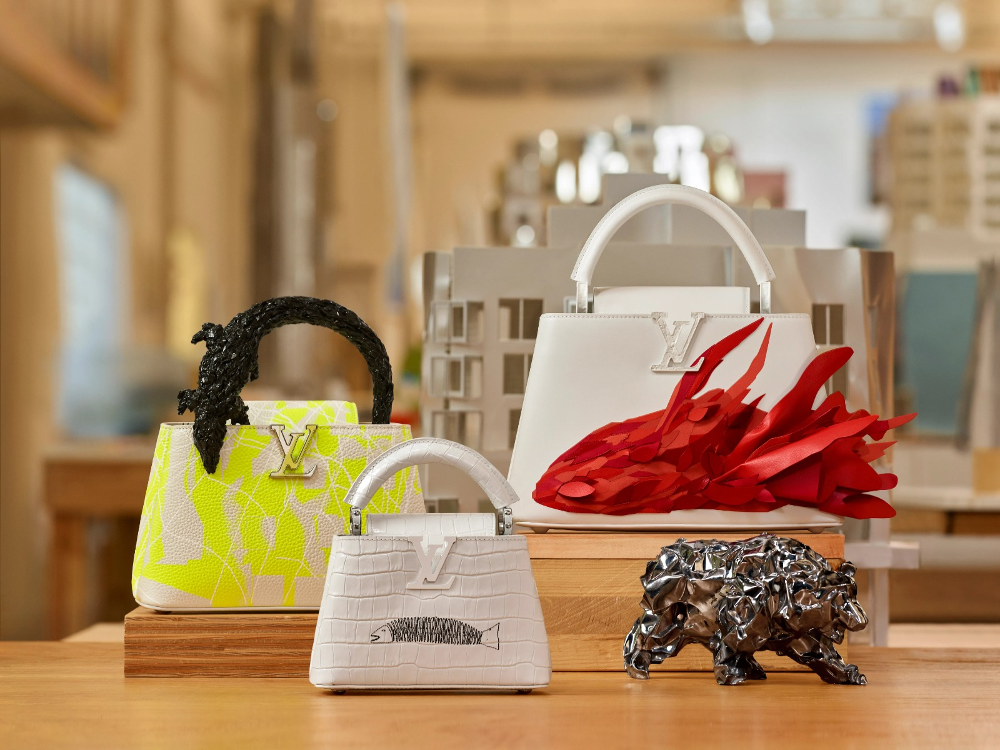

Coach merupakan brand mewah asal New York, Amerika Serikat (AS). Brand Coach berawal dari sebuah bisnis keluarga berupa workshop dompet kulit di New York pada 1941. Berbekal keahlian mengolah material kulit menjadi tas, pasangan suami-istri, Miles dan Lilian Chan, membangun usaha kecil tersebut. Empat tahun kemudian, keduanya dipercaya mengambil alih bisnis keluarga bernama Manhattan Leather Bags. Merek ini kemudian berubah nama dan populer dengan brand Coach Leatherware.
HERMES
Brand ini didirikan pada tahun 1837 dan telah menjadi salah satu brand barang mewah terbaik di dunia selama lebih dari 180 tahun. Hermès juga dikenal karena keahlian kerajinan tangan tradisional dan terus mempertahankan nilai-nilai tersebut dalam proses produksi produknya.
PRADA
Prada adalah suatu merek produk mode (fashion) dari Italia yang secara khusus membuat barang-barang mewah untuk pria dan wanita. Prada didirikan di Milan dan kemudian mulai menyebar ke seluruh Eropa, Amerika, bahkan dunia. Produk Prada terkenal karena desainnya yang sederhana dan elegan pada berbagai produk seperti tas tangan dan sepatu wanita, ikat pinggang, pakaian dalam, gaun, dan pakaian pria.
BOTTEGA VENETA
Bottega Veneta adalah brand luxury fashion asal Italia yang berakar di Milan. Didirikan pada 1966, label ini dirintis oleh Michele Taddei dan Renzo Zengiaro. Pabriknya berlokasi di sebuah villa yang dibangun pada abad ke-18 di Montebello Vicentino, sedangkan kantor pusatnya berada di Lugano, Swiss, sementara kantor perwakilannya berada di Milan dan Vicenza, Italia.
LOUIS VUITTON

Louis Vuitton Malletier, biasa disebut sebagai Louis Vuitton (pengucapan bahasa Prancis: [lwi vɥitɔ̃]) atau disingkat LV, adalah sebuah perusahaan barang mewah dan rumah mode asal Prancis yang didirikan pada tahun 1854 oleh Louis Vuitton. Perusahaan ini beroperasi di 50 negara dengan lebih dari 460 gerai di seluruh dunia dan untuk enam tahun berturut-turut (2006–2012), Louis Vuitton disebut sebagai merek mewah paling berharga di dunia.
VALENTINO GARAVANI
Valentino didirikan pada tahun 1960 di Italia oleh Valentino Garavani. Brand ini berpusat di Milan, sementara lokasi perancangan produk berada di Roma. Debut internasional pertama Valentino sudah dilakukan sejak 1962 di Florence, di mana saat itu Florence merupakan pusat mode Italia.